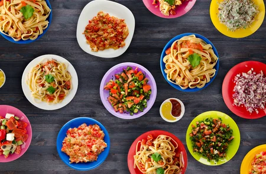

올바른 영양소 섭취
건강한 식생활이 모든것을 건강하게 만든다

여러 가지 식품을 골고루 먹읍시다.
- 다양한 식품을 선택하여 체내에서의 역할이 다른 여러 영양소를 균형있게 섭취 한다.
- 비타민, 무기질, 식이섬유가 많은 채소, 과일 및 해조류를 충분히 먹는다.
- 우리 국민들에게 부족하기 쉬운 칼슘과 리보플라빈(비타민 B2)을 많이 함유한 우유 또는 우유가공식품을 먹는다.
- 지방의 섭취는 총열량의 20% 정도로 한다.
- 백미보다는 현미를, 쌀밥보다는 잡곡밥을 많이 먹는다.
정상체중을 유지할 수 있도록 알맞게 먹읍시다.
- 알맞게 먹고 신체활동을 활발히 하여 정상체중을 유지한다.
- 과식, 결식이나 폭식을 하지 않는다.
- 지방이 많은 음식 섭취를 절제하고 육류 이외에 생선, 알류 등을 골고루 먹는다.
- 열량만 많이 있는 단 음식, 자극성이 많은 청량음료 등의 섭취를 절제한다.
식사는 규칙적으로 즐겁게 합시다.
- 식사는 일상생활의 원동력이므로 하루에 세끼를 규칙적으로 하고 즐거운 식사를 통하여 생활의 안정을 얻는다.
- 음식은 천천히 잘 씹어서 먹는다.
- 식사시간을 가정생활의 구심점으로 하여 가족간의 대화와 화합의 시간으로 한다.
음식은 되도록 싱겁게 먹읍시다.
- 고혈압 등 많은 질병의 위험요인이 되는 소금을 하루에 5g 이하로 섭취하도록 노력한다.
- 저장식품을 지나치게 짜게 만들지 말고 가공식품은 보통 나트륨 함량이 높으므로 적게 먹는다.
- 다양한 재료와 조리법으로 소금의 과다섭취요인을 줄인다.
- 식탁에서 소금이나 간장을 넣는 습관을 없앤다.
과음을 삼갑시다.
- 지방간, 간경변 등의 원인이 되고 간암의 위험요인이 되는 알콜의 섭취를 줄인다.
- 과음은 알콜의 체내 작용으로 식욕을 저하시키고 다른 식품 중의 영양소의 흡수와 이용을 방해하여 영양의 균형을 깨뜨린다.
출처 : 영등포 보건소
FFood Table
대한민국, 강원도 춘천시 한림대학교
www.hallym.com
010 0000 0000